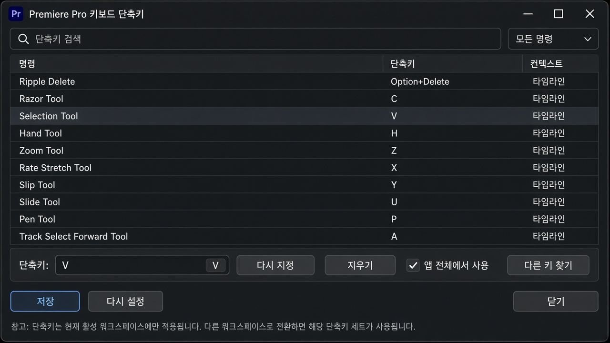

I O
인 / 아웃
Source 또는 타임라인에서 쓸 구간의 시작과 끝을 찍습니다.
레슨 08
Windows 기준입니다. Mac은 Ctrl을 Cmd, Alt를 Option으로 바꿔 쓰면 됩니다.

검색 결과가 없습니다. 다른 단어로 시도해 보세요.
I O
Source 또는 타임라인에서 쓸 구간의 시작과 끝을 찍습니다.
, .
쉼표는 밀어 넣기, 마침표는 덮어쓰기입니다.
C V
자르고 나면 바로 V로 돌아옵니다.
Ctrl+K
레이저로 클릭하지 않고 타깃 트랙을 자릅니다.
Shift+Delete
클립을 지우고 뒤 컷을 당겨 구멍을 메웁니다.
Q W
재생헤드 기준으로 앞(Q) 또는 뒤(W)를 잔물결 트림합니다.
B N Y U
Ripple, Rolling, Slip, Slide.
J K L
뒤로, 정지, 앞으로. L을 반복하면 배속이 올라갑니다.
Space
가장 많이 쓰는 키입니다. 컷 전후로 반드시 들어 보세요.
+ - \
확대, 축소, 시퀀스 전체에 맞추기.
S
컷이 가장자리·재생헤드에 붙습니다. 입문은 켜 두세요.
Alt+드래그
J/L 컷을 만들 때 씁니다.
Ctrl+S
컷 몇 번마다 저장합니다. 자동 저장과 별개입니다.
Ctrl+Z
잘못된 Overwrite나 삭제를 즉시 되돌립니다.
Ctrl+I
미디어를 프로젝트로 들입니다.
M
다시 손볼 컷, 자막 위치, 음악 드롭을 표시합니다.
편집 → 키보드 단축키에서 키를 검색하고 바꿀 수 있습니다. 기본값을 먼저 몸에 익힌 뒤 바꾸는 것을 권합니다.